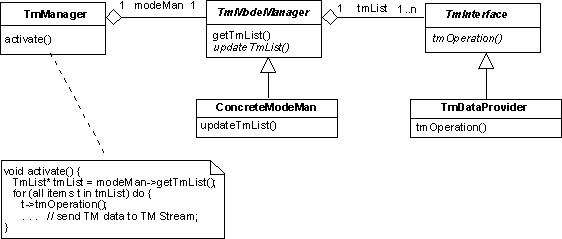

Telemetry Management Design Pattern
Intent
Decouple the management of telemetry from the format and layout of the telemetry data and allow the development of an application-independent telemetry manager.
Based On
This is pattern is essentially identical to the telemetry management pattern of the AOCS Framework (see also: A. Pasetti, Embedded Control Systems and Software Frameworks, Springer-Verlag, 2002). This pattern relies on design solutions offered by the Telemeterable, Telemetry Item, and Telemetry Stream design patterns in this catalogue. It can also be seen as an instance of the manager design pattern.
Motivation
The management of the telemetry data collection process is traditionally delegated to a dedicated component. This component is normally not reusable because it directly interacts with the concrete application components from which the telemetry data are collected.
This design pattern proposes to decouple the telemetry management component from the components supplying the telemetry data through an abstract interface. This allows abstract management functions to be concentrated in the telemetry management component which then becomes application-independent. The nature of this abstract interface is not dictated by the design patterns. Possible solutions are provided by the Telemeterable and Telemetry Item design patterns in this catalogue.
The telemetry manager must also interface to the hardware channel to which the telemetry data must be written. Application independence in this respect can be achieved y using the solution proposed by the Telemetry Stream design pattern.
Dictionary Entries
The following abstractions or domain-wide concepts are defined to support the implementation of this design pattern:
Structure
This design pattern postulates the existence of two abstract interfaces. The first such interface is
TmInterface. It characterizes a generic component capable of somehow contributing data to
the telemetry data stream and it declares operations through which this component can be made to collect
the telemetry data or to send it to the telemetry stream. Potential solutions for the implementation of
this interface are offered by the Telemeterable and
Telemetry Item design patterns. These two patterns differ in the way
the telemetry data are to be collected. In the former case, components that can potentially contribute
data to the telemetry stream must be capable of supplying an image of their internal state that represents
their contribution to the telemetry data. In the latter case, instead, dedicated components are introduced
that are responsible for gathering and formatting individual items of telemetry data (the "telemetry items").
In both cases, however, interaction between the concrete components from which telemetry data are acquired
and the component responsible for managing the telemetry data flow is through an abstract interface.
The second abstract interface postulated by this design pattern is TelemetryStream. This interface serves as an encapsulation of the interface to the hardware channel through which telemetry data are forwarded t the ground. This interface is introduced by the Telemetry Stream design pattern.
The presence of these two interfaces allows the definition of a concrete component, the telemetry manager, that is responsible for managing the telemetry data flow. This component holds a reference to an abstract telemetry stream and to the list of components from which the telemetry data are to be collected. Since the latter are seen exclusively through abstract interfaces, the telemetry manager component can be built in an application-independent manner.
Participants
TelemetryManager:The component that is responsible for managing the collection of telemetry data and their dispatcing to the ground. TelemetryStream:The abstract interface that characterizes a generic data stream representing the hardware channel through which telemetry data are sent to the ground. ConcreteTmStream:Component implementing interface TelemetryStream that represents a specific and concrete telemetry stream. TmInterface:The abstract interface that characterize a generic component capable of supplying data for the telemetry stream. TmDataProvider:A concrete component that must contribute data to the telemetry stream.
Collaborations
The typical operational scenario for this design pattern is:
-
During the configuration phase, a list of components that must contribute telemetry data is constructed as a list of components of type
TmInterface. -
During the configuration phase, the telemetry manager is instatiated and loaded with a concrete telemetry stream and with the list of
TmInterfacecomponents. -
At run-time, the telemetry manager is activated. This causes it to go through the list of
TmInterfacecomponents, to process them in turn and to send the telemetry data to the telemetry stream.
Consequences
- The management of telemetry is decoupled from the layout and content of the telemetry data. These can be modified without having to change the telemetry manager.
-
Depending on how the
TmInterfaceinterface is defined, classes that contribute telemetry data may have to implement this interface. This may lead to existing code having to be modified.
Applicability
There is a need to centralize the management of the flow of telemetry data and the layout and content of the telemetry data may vary from application to application.
Implementation Issues
In some domains, the content of telemetry varies over time in the same application. For instance,
different operational situations may require different sets of telemetry data to be generated and
sent to the ground. This requirement may be accommodated by having the telemetry manager maintain
several tmList components, one for each type of telemetry data, and switching across
them in response to changes in its operational environment, or perhaps in response to commands from
the ground.
If the telemetry manager must maintain several telemetry lists of which only one is active
at any given time, the mode management pattern can be
used to manage the switching between tmList components. This situation is
illustrated in the class diagram below. Now the telemetry manager retrieves the telemetry
list from the mode manager component. The mode manager is responsible for implementing the
logic that decides, at any given time, which telemetry list should be used (this logic
is implemented in the updateTmList operation). The telemetry mode manager
is defined through an abstract interface to allow different switching logics to be
plugged into the same telemetry manager.

Since this design pattern is built on the Telemeterable, Telemetry Item, and Telemetry Stream design patterns,the considerations made in the implementation issues sections of these telecommands are also applicable.
OBS Framework Mapping
The implementation of this design pattern in the OBS Framework is supported by the following classes:
- TelemetryManagercomponent -->
CC_TelemetryManager
Sample Code
If one assumes that the TmInterface abstract interface is implemented using
the TelemetryItem interface of the Telemetry Item
design pattern, then a pseudo-code implementation of a telemetry manager is as follows:
class TelemetryManager {
TelemetryStream* tmStream;
TelemetryItem* tmList[N];
. . .
void activate() {
short int tmWord;
for (int j:=0; j++; j<N) {
tmList[i]->update();
if (tmList[i]->isValid())
{
tmWord=tmList[i].getItem();
tmStream->write(tmWord);
}
else
{ . . . // handle invalid TM word
}
}
}
}
In this implementation, a telemetry frame is made up of a set of N 16-bits words.
These are collected by dedicated TelemetryItem components. The telemetry manager is responsible
for controlling the collection process and for sending the individual telemetry items
to the telemetry stream.
For another example of an implementation of the Telemetry Manager component, see the sample code section of the Telemeterable design pattern.
Remarks
None
Author
A. Pasetti (P&P Software)
Last Modified
2002-07-25